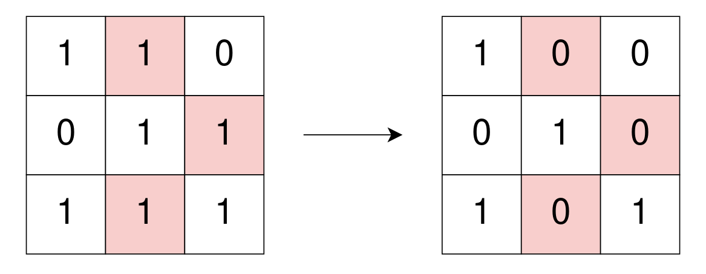
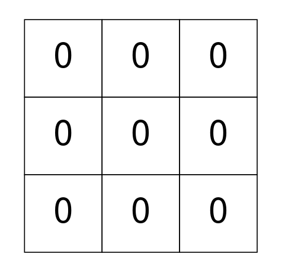
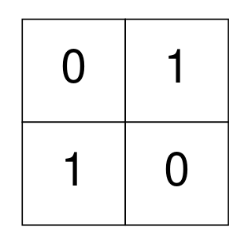

| Category | Difficulty | Likes | Dislikes |
|---|---|---|---|
| Algorithms | Hard | 54 | 13 |
amazon
You are given a 0-indexed binary matrix grid. In one operation, you can flip any 1 in grid to be 0.
A binary matrix is well-isolated if there is no 1 in the matrix that is 4-directionally connected (i.e., horizontal and vertical) to another 1.
Return the minimum number of operations to make grid well-isolated.
Example 1:

Input: grid = [[1,1,0],[0,1,1],[1,1,1]]
Output: 3
Explanation: Use 3 operations to change grid[0][1], grid[1][2], and grid[2][1] to 0.
After, no more 1's are 4-directionally connected and grid is well-isolated.Example 2:

Input: grid = [[0,0,0],[0,0,0],[0,0,0]]
Output: 0
Explanation: There are no 1's in grid and it is well-isolated.
No operations were done so return 0.Example 3:

Input: grid = [[0,1],[1,0]]
Output: 0
Explanation: None of the 1's are 4-directionally connected and grid is well-isolated.
No operations were done so return 0.
Constraints:
m == grid.lengthn == grid[i].length1 <= m, n <= 300grid[i][j] is either 0 or 1.